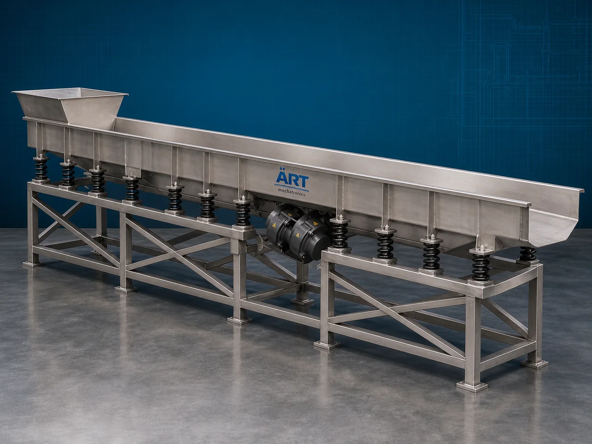

Vibratory Conveyor Machine (Industrial Vibrating Material Handling & Transfer System)
A Vibratory Conveyor Machine, also known as a Vibrating Conveyor or Industrial Vibratory Conveyor System, is an advanced industrial material handling equipment designed for continuous conveying, feeding, cooling, screening, distributing, and transferring powders, granules, flakes, grains, food…

About the Vibratory Conveyor
Vibratory conveyor systems are widely used for: ✔ Gentle material conveying ✔ Dust-free product transfer ✔ Controlled material feeding ✔ Cooling and drying applications ✔ Product distribution ✔ Hygienic material handling
The machine improves: ✔ Material handling efficiency ✔ Product safety and quality ✔ Production automation ✔ Process consistency ✔ Labor reduction ✔ Energy-efficient conveying
Unlike conventional conveyors, vibratory conveyors use: ✔ Controlled vibration technology ✔ Oscillating conveyor trays ✔ Electromagnetic or motorized vibration systems ✔ Spring-mounted conveyor structures
to move materials smoothly and uniformly.
Vibratory conveyor machines are widely used in industries such as:
Food processing industries
Snack manufacturing plants
Chemical industries
Pharmaceutical industries
Grain processing plants
Foundries
Recycling industries
Mining industries
where gentle, hygienic, and controlled material transportation is essential.
The machine is highly suitable for: ✔ Powder conveying ✔ Granule transfer ✔ Snack handling ✔ Cooling conveyor applications ✔ Product feeding systems ✔ Bulk material handling
ART Mechatronics offers high-performance vibratory conveyor machines, engineered for continuous industrial operation, hygienic conveying, low maintenance, and reliable long-term performance.
Working Principle of Vibratory Conveyor Machine
Powders, granules, snacks, grains, or bulk materials are loaded onto vibratory conveyor tray
Vibratory motors or electromagnetic drives generate controlled oscillation
Conveyor tray vibrates rapidly to move material forward
Machine conveys: ✔ Powders ✔ Granules ✔ Flakes ✔ Snacks ✔ Grains ✔ Food products smoothly without damaging product quality.
Vibration frequency and amplitude adjusted according to material characteristics
Conveyor can simultaneously perform: Cooling Drying Feeding Screening Distribution during material transfer.
Material discharged continuously at desired process point
Types of Vibratory Conveyor Machines
- 1. Electromagnetic Vibratory Conveyor
Uses: ✔ Electromagnetic vibration system for precise controlled feeding applications.
- 2. Motorized Vibratory Conveyor
Uses: ✔ Vibratory motors for heavy-duty industrial conveying operations.
- 3. Food Grade Vibratory Conveyor
Designed for: ✔ Hygienic food and pharmaceutical applications
- 4. Cooling Vibratory Conveyor
Suitable for: ✔ Product cooling during transfer process
- 5. Heavy Duty Vibrating Conveyor
Designed for: ✔ Mining and bulk material handling industries
- 6. Screening Vibratory Conveyor
Used for: ✔ Simultaneous conveying and screening operations
Industries Using Vibratory Conveyor Machine
🍃 Food Processing Industry Snack and food product conveying systems 🌾 Grain Processing Industry Grain and seed transfer applications ⚗️ Chemical Industry Powder and granule conveying systems 💊 Pharmaceutical Industry Hygienic powder handling systems 🍟 Snack Manufacturing Industry Chips and namkeen transfer systems ⛏️ Mining Industry Ore and bulk material conveying systems ♻️ Recycling Industry Waste and scrap material transfer systems 🔥 Foundry Industry Hot casting and material handling systems
Features & Advantages
✔ Gentle and uniform material conveying ✔ Suitable for fragile and delicate products ✔ Dust-free and hygienic material transfer ✔ Continuous industrial operation ✔ Low maintenance and energy-efficient design ✔ Controlled product feeding capability ✔ Simultaneous cooling and screening options ✔ Heavy-duty industrial construction ✔ Easy integration with automated production systems
Technical Highlights
Conveyor Type: Electromagnetic vibratory conveyor Motorized vibrating conveyor Cooling vibratory conveyor Construction: Stainless Steel / Mild Steel Vibration System: Electromagnetic drive Vibratory motor drive Conveyor Arrangement: Horizontal Inclined Multi-stage conveying Operation: Continuous vibration conveying Automation: Semi-automatic Fully automatic PLC-based systems
Turnkey Vibratory Conveying Solutions
ART Mechatronics offers: Complete vibratory conveyor systems Cooling and feeding conveyor solutions Hygienic bulk material handling systems Automated production line integration Installation & commissioning After-sales service & AMC
Why Choose Art Mechatronics
Expertise in industrial material handling and automation systems Customized vibratory conveyor solutions for multiple industries High-performance and durable industrial construction Energy-efficient and reliable conveying systems Proven industrial performance across sectors
Applications
Food Processing Plants Snack Manufacturing Facilities Chemical Industries Pharmaceutical Manufacturing Units Grain Processing Plants Mining & Recycling Industries
Related Conveying & Handling machines
Get pricing & specs for the Vibratory Conveyor
Share the product, target capacity, current process and plant location. These details help our engineers discuss the right machine or line configuration.
One partner, from design to start-up
ART Mechatronics designs, manufactures, installs and commissions your Vibratory Conveyor solution with regional presence in India, UAE and Thailand.